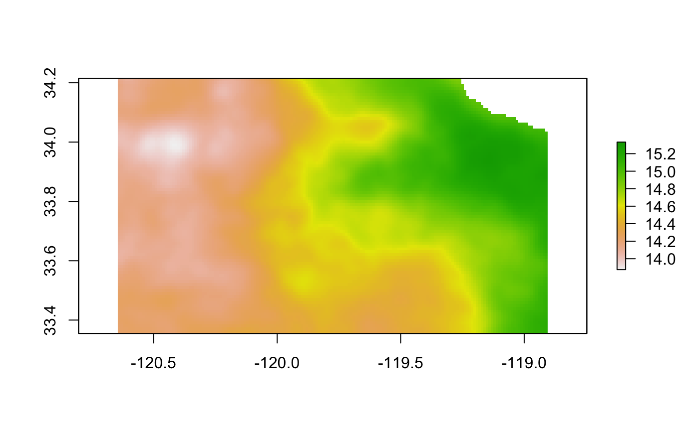

vignettes/debug_cinms-issue57_erddap.Rmd
debug_cinms-issue57_erddap.Rmdlibrary(nms4r) #> Warning: replacing previous import 'dplyr::collapse' by 'glue::collapse' when #> loading 'nms4r' #> Warning: replacing previous import 'magrittr::extract' by 'tidyr::extract' when #> loading 'nms4r'
Deep dive debug by git cloning https://github.com/ropensci/rerddap into ~/github/rerddap and inserting browser() at line 47 of R/grid.R:
devtools::load_all("~/github/rerddap") #> Loading rerddap #> Registered S3 method overwritten by 'httr': #> method from #> print.cache_info hoardr nc <- rerddap::griddap( rerddap::info("jplMURSST41mday"), url = "https://coastwatch.pfeg.noaa.gov/erddap/", time = c("2003-02-01", "2003-02-28"), latitude = c(33.36241, 34.20707) , longitude = c(-118.9071, -120.6421), fields = "sst", fmt = 'nc') #> info() output passed to x; setting base url to: https://upwell.pfeg.noaa.gov/erddap/ r <- raster::raster(nc$summary$filename) raster::plot(r)
